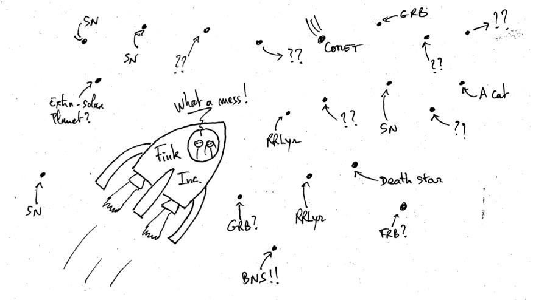
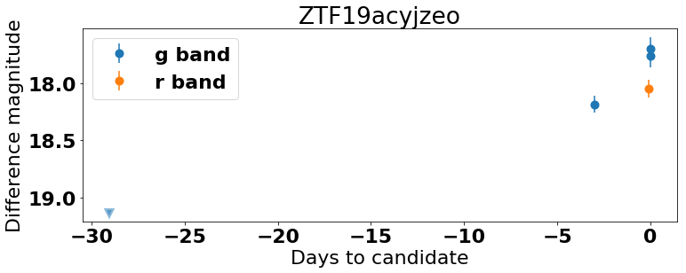
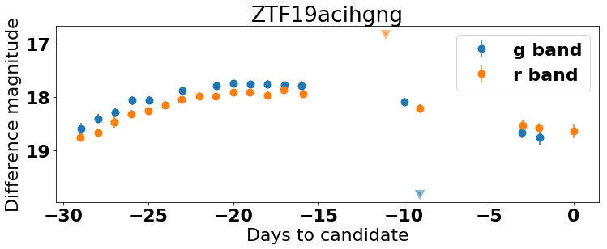
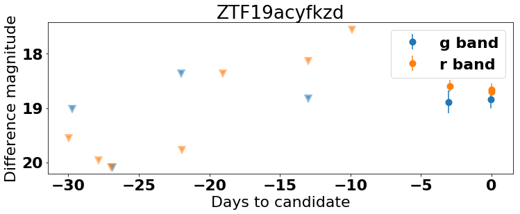

1. Exploring ZTF Alerts¶
This first tutorial shows how to open, explore and display information contained in an alert from ZTF. You can play this tutorial in a Jupyter notebook, an interactive Python session, or a Python script.

Before starting
Make sure fink-client is correctly installed (see the index page of the tutorial).
1.1. Set up¶
Import necessary packages and set up matplotlib parameters for readable plots
import matplotlib.pyplot as plt
import matplotlib
import numpy as np
from fink_client.avroUtils import AlertReader
from fink_client.visualisation import show_stamps
from fink_client.visualisation import extract_field
# For plots
font = {
'weight': 'bold',
'size': 22
}
matplotlib.rc('font', **font)
# Bands
filter_color = {1: '#1f77b4', 2: '#ff7f0e', 3: '#2ca02c'}
# [
# '#1f77b4', # muted blue
# '#ff7f0e', # safety orange
# '#2ca02c', # cooked asparagus green
# '#d62728', # brick red
# '#9467bd', # muted purple
# '#8c564b', # chestnut brown
# '#e377c2', # raspberry yogurt pink
# '#7f7f7f', # middle gray
# '#bcbd22', # curry yellow-green
# '#17becf' # blue-teal
# ]
filter_name = {1: 'g band', 2: 'r band', 3: 'i band'}
1.2. Load alert data¶
ZTF alert data are serialised in Avro format. Since this format is not widely spread in the astronomy community, we provide the class AlertReader to ease the alert manipulation. You can pass to it a single alert file, or a folder containing alerts:
# you will find datatest/ in the workshop repo.
r = AlertReader('datatest')
The reader has methods to load data, and you will probably find useful the to_pandas method that loads alert data into a Pandas DataFrame:
# Store alert data in a Pandas DataFrame
df = r.to_pandas()
Similarly, you have a method to_list, that loads the data into a list of dictionaries (each alert being a dictionary), or to_iterator that returns a generator.
Exercise: Explore the content of alerts. What information is available? You will find the description of each field at https://zwickytransientfacility.github.io/ztf-avro-alert/
1.3. Display cutouts¶
You might have noticed the fields cutout* in each alert. These fields are 60x60 pixels image around the position of the alert. You have 3 such fields:
cutoutScience: the observation made by ZTFcutoutTemplate: the reference image used to make the comparison with the observationcutoutDifference: The difference between the observation and the reference image.
These cutouts are stored in binary (gzip-compressed FITS cutout image). We expose the function show_stamps to ease their visualisation.
# Take the first alert
alert = r.to_list(size=1)[0]
# Display the cutouts contained in the alert
print(alert['objectId'])
fig = plt.figure(num=0, figsize=(12, 4))
show_stamps(alert, fig)

1.4. Display lightcurve data¶
Each alert has the information about the current observation (field candidate), but it also contains historical information at the same location up to one month (field prv_candidates). Fink exposes routine to retrieve the full information as one vector:
# Extract all measurement dates contained in the alert
all_dates = extract_field(alert, 'jd')
This allows us to reconstruct the lightcurve for example. Note that we use the magnitude from PSF-fit photometry here (we could also have derived the apparent magnitude from the different fields)
# Load alert data
alerts = r.to_list()
# and plot the difference magnitude as function of time.
# Measurements and upper limits are treated separately.
for alert in alerts:
# extract current and historical data as one vector
mag = extract_field(alert, 'magpsf')
error = extract_field(alert, 'sigmapsf')
upper = extract_field(alert, "diffmaglim")
# filter bands
fid = extract_field(alert, "fid")
# Rescale dates to end at 0
jd = extract_field(alert, "jd")
dates = np.array([i - jd[0] for i in jd])
# Title of the plot (alert ID)
title = alert["objectId"]
# loop over filters
fig = plt.figure(num=1, figsize=(12, 4))
# Loop over each filter
for filt in filter_color.keys():
mask = np.where(fid == filt)[0]
# Skip if no data
if len(mask) == 0:
continue
# y data
maskNotNone = mag[mask] != None
plt.errorbar(
dates[mask][maskNotNone], mag[mask][maskNotNone],
yerr=error[mask][maskNotNone],
color=filter_color[filt], marker='o',
ls='', label=filter_name[filt], mew=4)
# Upper limits
plt.plot(
dates[mask][~maskNotNone], upper[mask][~maskNotNone],
color=filter_color[filt], marker='v', ls='', mew=4, alpha=0.5)
plt.title(title)
plt.legend()
plt.gca().invert_yaxis()
plt.xlabel('Days to candidate')
plt.ylabel('Difference magnitude')
plt.show()




You could also plot data directly from pandas DataFrame, using built-in pandas tools.
1.5. Visualising alerts with CLI¶
fink-client exposes also the program fink_alert_viewer to visualise alerts from the terminal directly:
fink_alert_viewer -h
usage: fink_alert_viewer [-h] [-filename FILENAME]
Display cutouts and lightcurve from a ZTF alert
optional arguments:
-h, --help show this help message and exit
-filename FILENAME Path to an alert data file (avro format)
Make sure that $FINK_CLIENT_HOME/bin is in your $PATH (see the beginning of this tutorial). Go to a folder with alerts (e.g. dataset/ in the tutorial repository), and call it on one file:
fink_alert_viewer -filename ZTF19acihgng.avro
# display cutouts & lightcurve